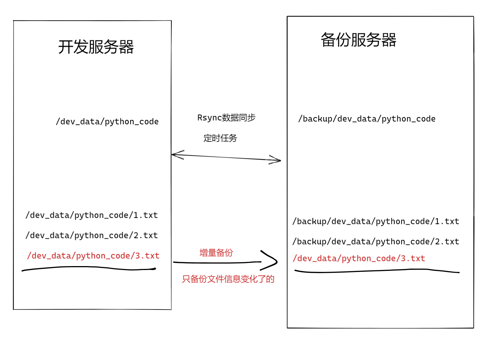
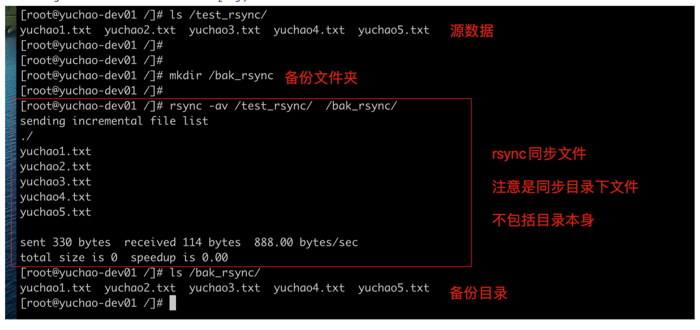
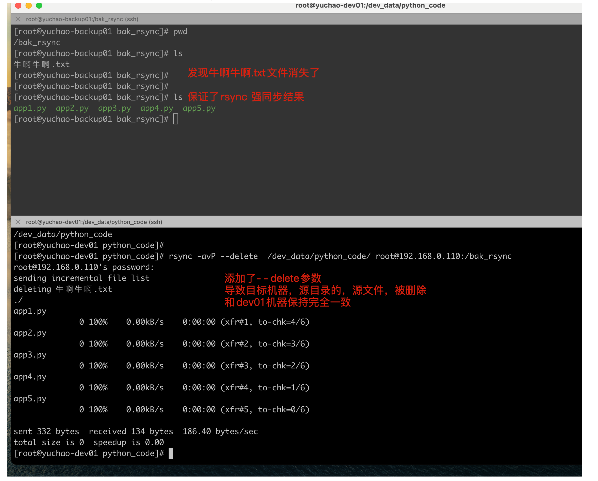
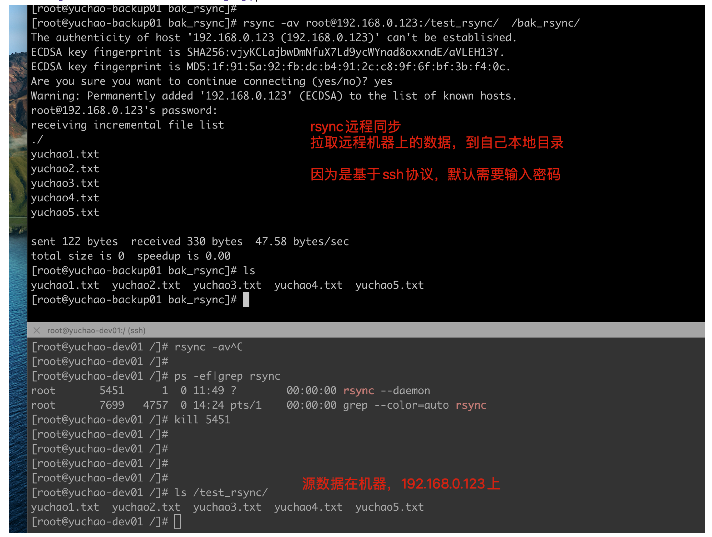
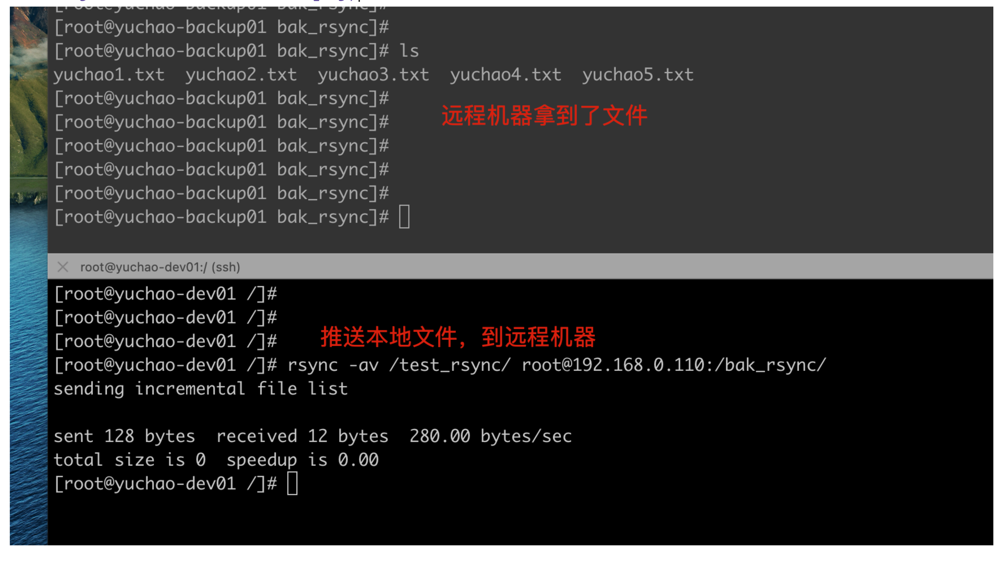
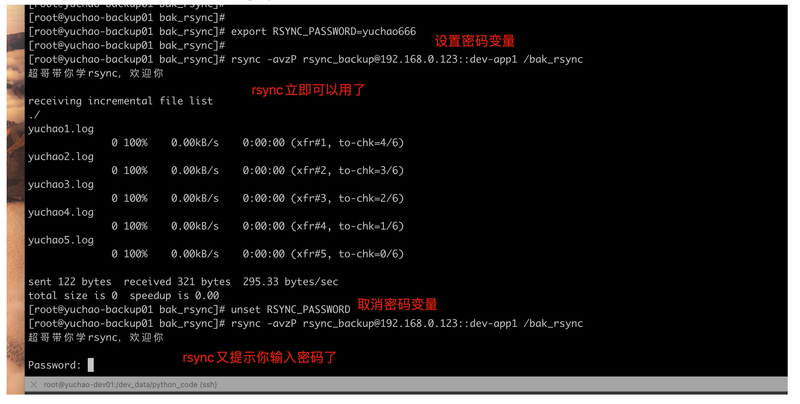

3-4-Rsync数据同步服务
备份是太常见、且太重要的一个日常工作了。
备份源码、文档、数据库、等等。
类似cp命令拷贝，但是支持服务器之间的网络拷贝，且保证安全性。
学习背景
超哥游戏公司要每天都要对代码备份。
任务需求
1.备份机每天夜里2点要同步开发服务器下的/dev_data/python_code数据，存放到/backup/dev_data/python_code
2.要求记录同步日志，便于记录、处理故障问题。
任务拆解
1.选择合适的备份工具，比如scp（为什么不是cp？）
2.学习rsync工具
3.编写定时任务
关乎知识点
1.rsync学习（新知识点）
2.crontab（复习知识）
课程目标
1.能够使用rsync实现本地文件同步（cp效果）
2.能够使用rsync实现远程网络文件同步(scp效果)
3.将rsync放入后台运行，实现数据定时同步。
理论储备
关于同步的种类
rsync 远程同步：remote synchronous
sync 同步：刷新文件系统缓存，强制将修改过的数据块写入磁盘，并且更新超级块。
- async 异步：将数据先放到缓冲区，再周期性（一般是30s）的去同步到磁盘。
一、rsync是什么
Rsync是一款开源的、快速的、多功能的、可实现全量及增量的本地或远程数据同步备份的优秀工具。并且可以不进行改变原有数据的属性信息，实现数据的备份迁移特性。
Rsync软件适用于unix/linux/windows等多种操作系统平台。
Rsync是一个快速和非常通用的文件复制工具。它能本地复制，远程复制，或者远程守护进程方式复制。
它提供了大量的参数来控制其行为的各个方面，并且允许非常灵活的方式来实现文件的传输复制。它以其delta-transfer算法闻名。减少通过网络数据发送数量，利用只发送源文件和目标文件之间的差异信息，从而实现数据的增量同步复制。
Rsync被广泛用于数据备份和镜像，并且作为一种改进后的复制命令用于日常运维。
Rsync具备使本地和远程两台主机之间的数据快速复制，远程备份的功能，Rsync命令本身即可实现异地主机复制数据，功能类似scp又优于scp，scp每次都是全量备份，rsync可以实现增量拷贝（和scp一样都是基于ssh服务传输），Rsync软件还支持配置守护进程，实现异机数据复制。
增量复制是Rsync一特点，优于scp,cp命令。
Rsync实现如下功能
- 本地数据同步复制，效果如cp
- 远程数据同步复制，如scp
- 本地数据删除，如rm
- 远程数据查看，如ls
Rsync软件特性
- 支持拷贝普通文件，特殊文件（link文件，设备文件）
- 支持排除指定文件、目录的同步功能（同步数据时，指定文件不同步）
- 能够保持原有文件所有属性均不变（stat查看的状态）
- 实现增量复制（只复制变化的数据，数据传输效率极高）
- 可以配合ssh、rcp、rsh等方式进行隧道加密文件传输（rsync本身不加密数据）
- 可以通过socket（进行通信文件）传输文件和数据（c/s架构）
- 支持匿名用户模式传输+
图解rsync增量备份

二、rsync语法
rsync命令超详细解释。
Rsync命令参数详解
在对rsync服务器配置结束以后，下一步就需要在客户端发出rsync命令来实现将服务器端的文件备份到客户端来。rsync是一个功能非常强大的工具，其命令也有很多功能特色选项，我们下面就对它的选项一一进行分析说明。Rsync的命令格式可以为以下六种：
rsync [OPTION]... SRC DEST
rsync [OPTION]... SRC [USER@]HOST:DEST
rsync [OPTION]... [USER@]HOST:SRC DEST
rsync [OPTION]... [USER@]HOST::SRC DEST
rsync [OPTION]... SRC [USER@]HOST::DEST
rsync [OPTION]... rsync://[USER@]HOST[:PORT]/SRC [DEST]
对应于以上六种命令格式，rsync有六种不同的工作模式：
1)拷贝本地文件。当SRC和DES路径信息都不包含有单个冒号":"分隔符时就启动这种工作模式。如：rsync -a /data /backup
2)使用一个远程shell程序(如rsh、ssh)来实现将本地机器的内容拷贝到远程机器。当DST路径地址包含单个冒号":"分隔符时启动该模式。如：rsync -avz *.c foo:src
3)使用一个远程shell程序(如rsh、ssh)来实现将远程机器的内容拷贝到本地机器。当SRC地址路径包含单个冒号":"分隔符时启动该模式。如：rsync -avz foo:src/bar /data
4)从远程rsync服务器中拷贝文件到本地机。当SRC路径信息包含"::"分隔符时启动该模式。如：rsync -av root@172.16.78.192::www /databack
5)从本地机器拷贝文件到远程rsync服务器中。当DST路径信息包含"::"分隔符时启动该模式。如：rsync -av /databack root@172.16.78.192::www
6)列远程机的文件列表。这类似于rsync传输，不过只要在命令中省略掉本地机信息即可。如：rsync -v rsync://172.16.78.192/www
rsync参数的具体解释如下：
-v, --verbose 详细模式输出
-q, --quiet 精简输出模式
-c, --checksum 打开校验开关，强制对文件传输进行校验
-a, --archive 归档模式，表示以递归方式传输文件，并保持所有文件属性，等于-rlptgoD
-r, --recursive 对子目录以递归模式处理
-R, --relative 使用相对路径信息
-b, --backup 创建备份，也就是对于目的已经存在有同样的文件名时，将老的文件重新命名为~filename。可以使用--suffix选项来指定不同的备份文件前缀。
--backup-dir 将备份文件(如~filename)存放在在目录下。
-suffix=SUFFIX 定义备份文件前缀
-u, --update 仅仅进行更新，也就是跳过所有已经存在于DST，并且文件时间晚于要备份的文件。(不覆盖更新的文件)
-l, --links 保留软链结
-L, --copy-links 想对待常规文件一样处理软链结
--copy-unsafe-links 仅仅拷贝指向SRC路径目录树以外的链结
--safe-links 忽略指向SRC路径目录树以外的链结
-H, --hard-links 保留硬链结 -p, --perms 保持文件权限
-o, --owner 保持文件属主信息 -g, --group 保持文件属组信息
-D, --devices 保持设备文件信息 -t, --times 保持文件时间信息
-S, --sparse 对稀疏文件进行特殊处理以节省DST的空间
-n, --dry-run现实哪些文件将被传输
-W, --whole-file 拷贝文件，不进行增量检测
-x, --one-file-system 不要跨越文件系统边界
-B, --block-size=SIZE 检验算法使用的块尺寸，默认是700字节
-e, --rsh=COMMAND 指定使用rsh、ssh方式进行数据同步
--rsync-path=PATH 指定远程服务器上的rsync命令所在路径信息
-C, --cvs-exclude 使用和CVS一样的方法自动忽略文件，用来排除那些不希望传输的文件
--existing 仅仅更新那些已经存在于DST的文件，而不备份那些新创建的文件
--delete 删除那些DST中SRC没有的文件
--delete-excluded 同样删除接收端那些被该选项指定排除的文件
--delete-after 传输结束以后再删除
--ignore-errors 及时出现IO错误也进行删除
--max-delete=NUM 最多删除NUM个文件
--partial 保留那些因故没有完全传输的文件，以是加快随后的再次传输
--force 强制删除目录，即使不为空
--numeric-ids 不将数字的用户和组ID匹配为用户名和组名
--timeout=TIME IP超时时间，单位为秒
-I, --ignore-times 不跳过那些有同样的时间和长度的文件
--size-only 当决定是否要备份文件时，仅仅察看文件大小而不考虑文件时间
--modify-window=NUM 决定文件是否时间相同时使用的时间戳窗口，默认为0
-T --temp-dir=DIR 在DIR中创建临时文件
--compare-dest=DIR 同样比较DIR中的文件来决定是否需要备份
-P 等同于 --partial
--progress 显示备份过程
-z, --compress 对备份的文件在传输时进行压缩处理
--exclude=PATTERN 指定排除不需要传输的文件模式
--include=PATTERN 指定不排除而需要传输的文件模式
--exclude-from=FILE 排除FILE中指定模式的文件
--include-from=FILE 不排除FILE指定模式匹配的文件
--version 打印版本信息
--address 绑定到特定的地址
--config=FILE 指定其他的配置文件，不使用默认的rsyncd.conf文件
--port=PORT 指定其他的rsync服务端口
--blocking-io 对远程shell使用阻塞IO
-stats 给出某些文件的传输状态
--progress 在传输时现实传输过程
--log-format=formAT 指定日志文件格式
--password-file=FILE 从FILE中得到密码
--bwlimit=KBPS 限制I/O带宽，KBytes per second
-h, --help 显示帮助信息
精简语法
NAME
rsync — a fast, versatile, remote (and local) file-copying tool
//一种快速、通用、远程（和本地）的文件复制工具
SYNOPSIS
Local: rsync [OPTION...] SRC... [DEST]
Access via remote shell:
//通过远程shell访问（命令）
Pull: rsync [OPTION...] [USER@]HOST:SRC... [DEST]
Push: rsync [OPTION...] SRC... [USER@]HOST:DEST
Access via rsync daemon:
//通过后台程序访问（作为服务）
Pull: rsync [OPTION...] [USER@]HOST::SRC... [DEST]
rsync [OPTION...] rsync://[USER@]HOST[:PORT]/SRC... [DEST]
Push: rsync [OPTION...] SRC... [USER@]HOST::DEST
rsync [OPTION...] SRC... rsync://[USER@]HOST[:PORT]/DEST
参数解释
-v 详细模式输出
-a 归档模式，递归的方式传输文件，并保持文件的属性，等同于 -rlptgoD
-r 递归拷贝目录
-l 保留软链接
-p 保留原有权限
-t 保留原有时间（修改）
-g 保留属组权限
-o 保留属主权限
-D 等于--devices --specials 表示支持b,c,s,p类型的文件
-R 保留相对路径
-H 保留硬链接
-A 保留ACL策略
-e 指定要执行的远程shell命令
-E 保留可执行权限
-X 保留扩展属性信息 a属性
比较常用的组合参数
rsync -avzP
-a 保持文件原有属性
-v 显示传输细节情况
-z 对传输数据压缩传输
-P 显示文件传输的进度信息
三、rsync命令使用
1. 本机同步
注意：
1. 本地数据同步的时候，源目录后面的“/”会影响同步的结果
# rsync -av /dir1/ /dir3 //只同步目录下面的文件到指定的路径
# rsync -av /dir1 /dir2 //将当前目录dir1和目录下的所有文件一起同步
2. -R：不管加不加"/"，都会将源数据的绝对路径一起同步
# rsync -avR /dir1/ /dir2/
3. --delete：删除目标目录里多余的文件
# rsync -avR --delete /dir1/ /dir2/
实践
不包括源数据目录本身.

同步，携带源目录本身

同步后，删除目标目录下其他文件（慎用）

2.远程同步
其实语法也差不多
- 拉取
- rsync -av 想要的数据在哪 放到本地哪
- 推送
- rsync -av 本地的数据 放入远程的机器路径
拉取
pull: rsync -av user@host:/path local/path
# rsync -av root@10.1.1.1:/etc/hosts /dir1/
# rsync -av root@10.1.1.1:/backup /dir1
推送
push: rsync -av local/path user@host:/path
# rsync -av /dir1/aa1 code@10.1.1.1:/home/code
拉取实践

同样要注意，是否在文件夹结尾，添加斜线，结果是不一样的。
rsync -av root@192.168.0.123:/test_rsync /bak_rsync/
rsync -av root@192.168.0.123:/test_rsync/ /bak_rsync/
这种语法，是以ssh协议通信，需要输入ssh认证信息。
推送实践

思考
rsync远程同步数据时，默认情况下为什么需要密码？如果不想要密码同步怎么实现？
rsync基于ssh协议传输，因此需要认证方式、要么密码、要么密钥对儿。
两台Linux服务器在连接时，默认使用的还是SSH协议。
由于没有做免密登录，所以还是需要输入对方服务器的密码。
如果不想输入密码，可以使用免密登录来实现。
四、rsync守护进程模式
默认情况下，rsync只是作为一个命令来进行使用的（ps在查询进程时，找不到对应的服务），但是rsync提供了一种作为系统服务的实现方式。
守护进程传输模式是在客户端和服务端之间进行的数据复制。
服务端需要配置守护进程，在客户端执行命令，实现数据拉取和推送。
rsync守护进程模式
1.通过配置文件设置rsync功能
2.rsync命令变了，通过
模块名同步指定的文件夹。
如下语法，rsync就是以守护进程模式通信了，读取模块名。
rsync -av root@192.168.0.123::devdata /backup/dev_data/python_code/
- 启动rsync守护进程
- 寻求帮助
rsync --help 查看命令帮助
rsync --daemon 表示让程序后台运行
- 尝试后台启动rsync服务
1.确保配置文件存在
[root@yuchao-linux01 ~]# cat /etc/rsyncd.conf
# /etc/rsyncd: configuration file for rsync daemon mode
# See rsyncd.conf man page for more options.
# configuration example:
# uid = nobody
# gid = nobody
# use chroot = yes
# max connections = 4
# pid file = /var/run/rsyncd.pid
# exclude = lost+found/
# transfer logging = yes
# timeout = 900
# ignore nonreadable = yes
# dont compress = *.gz *.tgz *.zip *.z *.Z *.rpm *.deb *.bz2
# [ftp]
# path = /home/ftp
# comment = ftp export area
[root@yuchao-linux01 ~]#
2.启动程序
[root@yuchao-linux01 ~]# rsync --daemon
3.检查程序
[root@yuchao-linux01 ~]# ps -ef|grep rsync
root 3793 1 0 10:23 ? 00:00:00 rsync --daemon
root 3808 3714 0 10:23 pts/1 00:00:00 grep --color=auto rsync
[root@yuchao-linux01 ~]#
[root@yuchao-linux01 ~]#
[root@yuchao-linux01 ~]# netstat -tnlp|grep rsync
tcp 0 0 0.0.0.0:873 0.0.0.0:* LISTEN 3793/rsync
tcp6 0 0 :::873 :::* LISTEN 3793/rsync
[root@yuchao-linux01 ~]#
4.备注
rsync必须读取配置文件
rsync默认端口873、tcp协议。
- rsync配置文件解读
| 配置参数 | 参数说明 |
|---|---|
| uid = rsync | 指定rsync服务运行的时候，向磁盘进行读取和写入操作的操作者 |
| gid = rsync | 指定rsync服务运行的时候，向磁盘进行读取和写入操作的操作者 |
| use chroot = no | 进行数据同步存储时，安全相关参数，默认内网进行数据同步，可以关闭 |
| max connections = 200 | 定义向备份服务器进行数据存储的并发连接数 |
| timeout = 300 | 定义与备份服务器建立的网络连接，在多长时间没有数据传输时，就释放连接 |
| pid file = /var/run/rsyncd.pid | 服务程序运行时，会将进程的pid信息存储到一个指定的pid文件中 |
| lock file = /var/run/rsync.lock | 定义锁文件，主要用于配合max connections 参数，当达到最大连接就禁止继续访问 |
| 配置参数 | 参数说明 |
|---|---|
| log file = /var/log/rsyncd.log | 定义服务的日志文件保存路径信息 |
| [backup] | 指定备份目录的模块名称信息 |
| path = /backup | 指定数据进行备份的目录信息 |
| ignore errors | 在进行数据备份传输过程过程中，忽略一些I/O产生的传输错误 |
| read only = false | 设置对备份的目录的具有读写权限，即将只读模式进行关闭 |
| list = false | 确认是否可以将服务配置的模块信息，在客户端可以查看显示 |
| hosts allow = 172.16.1.0/24 | 设置备份目录允许进行网络数据备份的主机地址或网段信息，即设置白名单 |
| 配置参数 | 参数说明 |
|---|---|
| hosts deny = 0.0.0.0/32 | 设置备份目录禁止进行网络数据备份的主机地址或网段信息，即设置黑名单 |
| auth users = rsync_backup | 指定访问备份数据目录的认证用户信息，为虚拟定义的用户，不需要进行创建 |
| secrets file = /etc/rsync.password | 设置访问备份数据目录进行认证用户的密码文件信息，会在文件中设置认证用户密码信息 |
| 配置参数 | 参数说明 |
|---|---|
| [backup] | 指定模块名称，便于日后维护 |
| path=/backup | 在当前模块中，Daemon使用的文件系统或目录，注意目录权限和配置文件权限一直，防止读写出问题 |
#exclude= |
排除文件或目录，相对路径 |
| [chaoge] | 还可以添加其他模块 |
任务解决
任务分析
备份的本质就是文件拷贝
1. 命令选择
cp 、scp、rsync
2.选择rsync
1.功能丰富，强大
2.增量拷贝
3.命令使用流程
写配置文件/etc/rsyncd.conf
↓
执行rsync --daemon命令
↓
检查默认873端口
实验环境
该实验，务必注意，关闭防火墙，iptables -F、selinux、firewalld。
开发机器上执行
1.准备2台linux机器
192.168.0.110 yuchao-backup01
192.168.0.123 yuchao-dev01
2.在dev01机器上创建数据目录
[root@yuchao-dev01 ~]# mkdir -p /dev_data/python_code
[root@yuchao-dev01 ~]#
[root@yuchao-dev01 ~]#
[root@yuchao-dev01 ~]# touch /dev_data/python_code/app{1..5}.py
[root@yuchao-dev01 ~]#
[root@yuchao-dev01 ~]# ll /dev_data/python_code/
总用量 0
-rw--w--w- 1 root root 0 2月 15 11:20 app1.py
-rw--w--w- 1 root root 0 2月 15 11:20 app2.py
-rw--w--w- 1 root root 0 2月 15 11:20 app3.py
-rw--w--w- 1 root root 0 2月 15 11:20 app4.py
-rw--w--w- 1 root root 0 2月 15 11:20 app5.py
[root@yuchao-dev01 ~]#
3.运行rsync守护进程
安装
[root@yuchao-dev01 ~]# yum install rsync -y
写配置文件，部分信息如下
[root@yuchao-dev01 ~]# tail -3 /etc/rsyncd.conf
[devdata]
path=/dev_data/python_code/
log file = /var/log/rsync.log
运行rsync守护进程
[root@yuchao-dev01 ~]# rsync --daemon
检查rsync
[root@yuchao-dev01 ~]# ps -ef|grep rsync
root 3793 1 0 10:23 ? 00:00:00 rsync --daemon
root 5090 4757 0 11:30 pts/1 00:00:00 grep --color=auto rsync
4.设置文件夹权限755
[root@yuchao-dev01 ~]# chmod -R 755 /dev_data/
备份机器上执行
1.准备好数据备份的目录
[root@yuchao-backup01 ~]# mkdir -p /backup/dev_data/python_code
2.查看rsync服务端的模块名字
[root@yuchao-backup01 ~]# rsync -a root@192.168.0.123::
devdata
3.编写数据备份脚本，待会结合定时任务
[root@yuchao-backup01 rsync_sh]# cat rsync_python.sh
#!/bin/bash
rsync -av root@192.168.0.123::devdata /backup/dev_data/python_code/ &>/dev/null
赋予执行权限
[root@yuchao-backup01 rsync_sh]# chmod +x rsync_python.sh
4.交给定时任务
[root@yuchao-backup01 rsync_sh]# crontab -e
crontab: installing new crontab[root@yuchao-backup01 rsync_sh]#
[root@yuchao-backup01 backup]# crontab -l
00 02 * * * /root/rsync_sh/rsync_python.sh
5.可以手动执行rsync命令，立即查看数据同步结果（看到文件传输过来了，表示正确了）
[root@yuchao-backup01 backup]# /root/rsync_sh/rsync_python.sh
[root@yuchao-backup01 backup]#
[root@yuchao-backup01 backup]# ls /backup/dev_data/python_code/
app1.py app2.py app3.py app4.py app5.py
6.也可以设置时间，让定时任务来执行（但是由于时间不同步，会有延迟执行。）
date -s '01:59:50'
小结
1.rsync是用于实现文件同步，包括本地同步、远程同步；
2.rsync可以以守护进程形式运行，默认端口是873/tcp协议，默认没有密码即可；
3.rsync还可以通过修改配置文件，支持很多复杂功能；
4.rsync可以和定时任务结合使用；
rsync扩展（密码功能）
已知，使用rsync守护进程模式，默认不需要密码了。
如何添加密码认证，增加安全性，rsyncd.conf提供了该功能
实验环境
配置文件准备
1.两台linux机器
192.168.0.110 yuchao-back01 /bak_rsync/
192.168.0.123 yuchao-dev01 /devdata/python_data/
2.修改rsync守护进程机器上配置文件，dev01开发机器上
[root@yuchao-dev01 ~]# ps -ef|grep rsync
root 8039 1 0 14:41 ? 00:00:00 rsync --daemon
3.修改配置文件，部分信息如下
[root@yuchao-dev01 ~]# tail -10 /etc/rsyncd.conf
motd file=/etc/rsyncd.welcome
[dev-app1]
comment=这是超哥讲解 rsync加密的模块
path=/devdata/python_data/
auth users=rsync_backup
secrets file=/etc/rsyncd.secrets
4.创建密码文件
[root@yuchao-dev01 ~]# cat /etc/rsyncd.secrets
rsync_backup:yuchao666
5.创建欢迎文件
[root@yuchao-dev01 ~]# cat /etc/rsyncd.welcome
超哥带你学rsync，欢迎你
6.修改文件权限，增加安全，注意这里一定要改，最大降低该密码文件权限为只读即可。
[root@yuchao-dev01 ~]# chmod 600 /etc/rsyncd.secrets
7.准备用于备份的测试数据
[root@yuchao-dev01 ~]# mkdir -p /devdata/python_data/
[root@yuchao-dev01 ~]#
[root@yuchao-dev01 ~]# touch /devdata/python_data/yuchao{1..5}.log
[root@yuchao-dev01 ~]#
[root@yuchao-dev01 ~]# ls /devdata/python_data/
yuchao1.log yuchao2.log yuchao3.log yuchao4.log yuchao5.log
设置文件权限
[root@yuchao-dev01 ~]# chmod -R 755 /devdata/python_data/
需要重启开发服务器上的rsync守护进程，加载新的配置文件
[root@yuchao-dev01 ~]# ps -ef|grep rsync
root 8039 1 0 14:41 ? 00:00:00 rsync --daemon
root 9199 8915 0 15:55 pts/1 00:00:00 grep --color=auto rsync
[root@yuchao-dev01 ~]#
[root@yuchao-dev01 ~]# kill 8039
[root@yuchao-dev01 ~]# rsync --daemon
[root@yuchao-dev01 ~]#
[root@yuchao-dev01 ~]# ps -ef|grep rsync
root 9209 1 0 15:56 ? 00:00:00 rsync --daemon
root 9211 8915 0 15:56 pts/1 00:00:00 grep --color=auto rsync
[root@yuchao-dev01 ~]#
去备份服务器上，执行rsync命令，拉取需要同步的数据。
注意你要设置正确的rsync账号、密码；
[root@yuchao-backup01 ~]# rsync -av rsync_backup@192.168.0.123::dev-app1 /bak_rsync
超哥带你学rsync，欢迎你
Password:
receiving incremental file list
./
yuchao1.log
yuchao2.log
yuchao3.log
yuchao4.log
yuchao5.log
sent 122 bytes received 336 bytes 130.86 bytes/sec
total size is 0 speedup is 0.00
[root@yuchao-backup01 ~]# ls /bak_rsync/
yuchao1.log yuchao2.log yuchao3.log yuchao4.log yuchao5.log
[root@yuchao-backup01 ~]#
更懒的用法
如果你想要密码，又懒得输入密码，当然是便于后期的脚本开发，你可以用如下方式，给rsync传入密码。
1.确认rsync命令存在
yum install rsync -y
2.创建密码文件，和服务端相同，就可以省略你手动输入rsync密码了。
[root@yuchao-backup01 bak_rsync]# echo 'yuchao666' > /etc/rsyncd.password
[root@yuchao-backup01 bak_rsync]# chmod 600 /etc/rsyncd.password
[root@yuchao-backup01 bak_rsync]# cat /etc/rsyncd.password
yuchao666
[root@yuchao-backup01 bak_rsync]#
3.执行同步命令，使用参数，传入密码文件
[root@yuchao-backup01 bak_rsync]# rsync -avzP rsync_backup@192.168.0.123::dev-app1 /bak_rsync --password-file=/etc/rsyncd.password
超哥带你学rsync，欢迎你
receiving incremental file list
./
yuchao1.log
0 100% 0.00kB/s 0:00:00 (xfr#1, to-chk=4/6)
yuchao2.log
0 100% 0.00kB/s 0:00:00 (xfr#2, to-chk=3/6)
yuchao3.log
0 100% 0.00kB/s 0:00:00 (xfr#3, to-chk=2/6)
yuchao4.log
0 100% 0.00kB/s 0:00:00 (xfr#4, to-chk=1/6)
yuchao5.log
0 100% 0.00kB/s 0:00:00 (xfr#5, to-chk=0/6)
sent 122 bytes received 321 bytes 886.00 bytes/sec
total size is 0 speedup is 0.00
[root@yuchao-backup01 bak_rsync]# pwd
/bak_rsync
[root@yuchao-backup01 bak_rsync]# ls
yuchao1.log yuchao2.log yuchao3.log yuchao4.log yuchao5.log
[root@yuchao-backup01 bak_rsync]#
4.还有一种是变量密码的形式，更为简单，但是要懂得变量理念，可以替代密码文件的用法。
[root@yuchao-backup01 bak_rsync]# export RSYNC_PASSWORD=yuchao666
